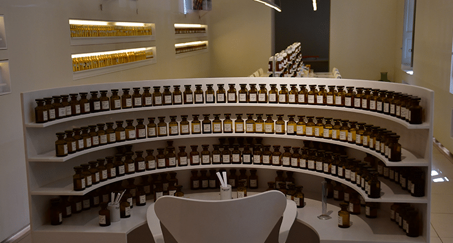

Los ingredientes para hacer perfumes usualmente incluyen: la sustancia aromática, también conocida como aceite esencial,
propilenglicol (C3H8O2), etanol desnaturalizado (C2H6O), fijador de aroma y agua destilada. No obstante la formula química
del perfume puede variar, dependiendo del tipo del aroma , el porcentaje de concentración de los componentes y principalmente
de la esencia pueden variar. Por ejemplo, el perfume como tal incluye un nivel de concentración de las esencias de entre el 20
y el 25%, mientras que en otros estilos como el “eau de parfum” o el “eau de toilette”, el porcentaje de concentración es
menor, con cifras entre el 10% y el 6%.
